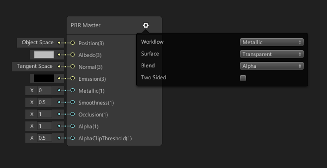
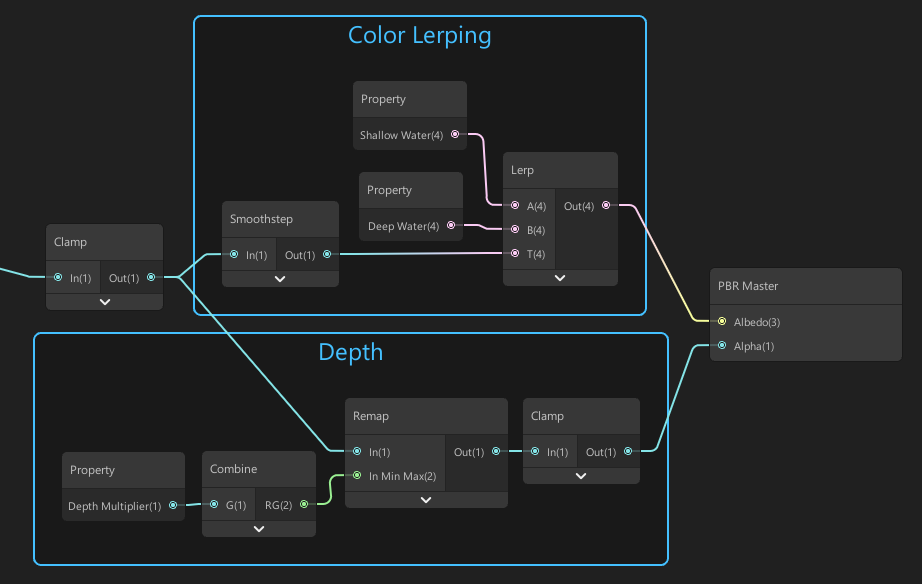
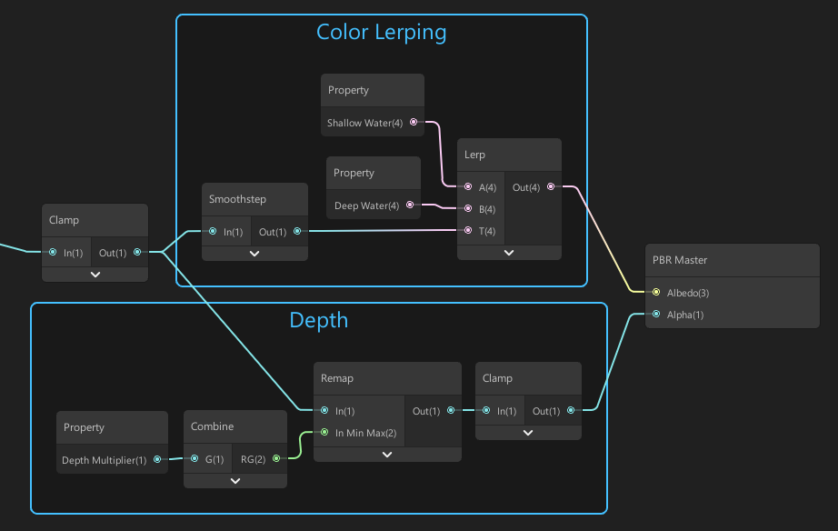
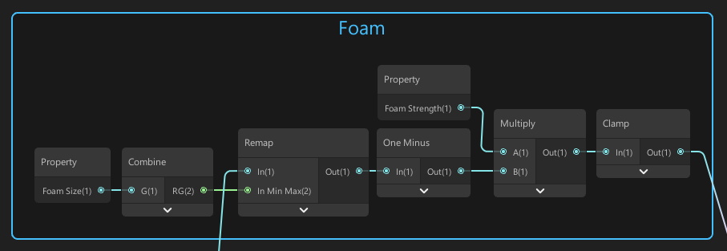
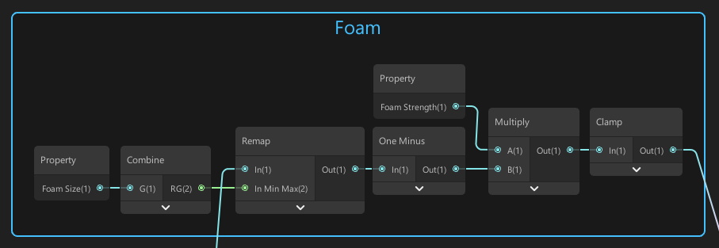

Creating A Water Shader
Back to projects
Disclaimer: I really don't know much about shaders. This is the first shader I've created and even
though I'm happy with the result and confident enough to share it, I might be doing some weird node stuff. You can treat this as a tutorial but please know that I'm not claiming to be a teacher. If you
have some comments about the shader or you see things that I'm doing that could be improved, I would appreciate it if you sent me a private message.
Introduction
Here is a breakdown of how I created a stylized water shader in Unity3D using shader graph. This was
created using Unity 2019.1 LWRP. Below is the final effect I achieved. Enjoy!
 The Final Shader
The Final Shader
Setup
For this shader, we will be using a LWRP PBR shader with its surface set to transparent. Also don't forget to enable access to the depth texture in your camera settings. Next, create a material that
uses the water shader and put it in your scene. Open up the shader in the shader graph editor and we're good to go!

A PBR graph master node with a transparent surface.
Depth Textures
 A depth texture from the Sponza Palace scene.
First let's explain what a depth texture is. A depth texture is a texture that gets its value from the camera's depth buffer. The texture displays the depth of the scene by using a color gradient between black and white.
The scene depth can be read in shader graph using the scene depth node. This node has 3 sampling modes.
A depth texture from the Sponza Palace scene.
First let's explain what a depth texture is. A depth texture is a texture that gets its value from the camera's depth buffer. The texture displays the depth of the scene by using a color gradient between black and white.
The scene depth can be read in shader graph using the scene depth node. This node has 3 sampling modes.
| Sampling Mode |
Description |
| Linear 01 |
Returns a linear depth value between 0 and 1.
Colorization depends on the camera's far-plane value.
|
| Raw |
Returns the raw depth value. |
| Eye |
Returns the depth value converted to view space. |
Reading Depth
 Reading the depth of our water.
The first step in creating our water surface is being able to correctly read the depth of the water. We will be doing this by accessing the camera's depth buffer. To read and use the depth of our scene and water plane, we will be using the following set of nodes. You could call them our depth-nodes. 🍎
Reading the depth of our water.
The first step in creating our water surface is being able to correctly read the depth of the water. We will be doing this by accessing the camera's depth buffer. To read and use the depth of our scene and water plane, we will be using the following set of nodes. You could call them our depth-nodes. 🍎
 Our node setup to read depth.
These nodes go through the following steps.
1. The scene depth node accesses the camera's depth texture and returns a value in eye/view space.
Instead of using the Eye sampling mode you can also use Linear 01, but in that case don't
forget to multiply with the far-plane value of the camera.
2. The screen position node gets the position of our water plane. We extract the alpha value
from it since that value holds the depth information.
3. We subtract the water plane's position from the scene depth which gives us a positive value. If the
value is > 0, that means an object is in the water at that position. If the value is 0, that means
there is no object in the water covering our view.
4. Finally we multiply our output with an offset value for some control. We turn this variable into a property for our shader called 'Depth Range'.
To visualize this effect we take the output of our node group and clamp the result to [0,1]. We then use that clamped value to lerp between 2 colors and plug this into the albedo slot of our material.
Our node setup to read depth.
These nodes go through the following steps.
1. The scene depth node accesses the camera's depth texture and returns a value in eye/view space.
Instead of using the Eye sampling mode you can also use Linear 01, but in that case don't
forget to multiply with the far-plane value of the camera.
2. The screen position node gets the position of our water plane. We extract the alpha value
from it since that value holds the depth information.
3. We subtract the water plane's position from the scene depth which gives us a positive value. If the
value is > 0, that means an object is in the water at that position. If the value is 0, that means
there is no object in the water covering our view.
4. Finally we multiply our output with an offset value for some control. We turn this variable into a property for our shader called 'Depth Range'.
To visualize this effect we take the output of our node group and clamp the result to [0,1]. We then use that clamped value to lerp between 2 colors and plug this into the albedo slot of our material.
More Control
 Using depth to create some basic water.
First we take the output of our previous depth node group and clamp the result to [0,1]. We then use that clamped value to lerp between a shallow water and a deep water color. The output goes to the albedo slot of our material. You can also add a smoothstep node for a better-looking result.
We also take this clamped output and remap it using a remap node to limit our values to a chosen
interval. We define a property 'Max Depth' as the maximum input value and limit the output value to [0,1]. The output of this remapping gets put into the alpha slot of our material.
Using our depth output for more control.
After setting the shallow and deep water to some blue colors we get a promising result!
Using depth to create some basic water.
First we take the output of our previous depth node group and clamp the result to [0,1]. We then use that clamped value to lerp between a shallow water and a deep water color. The output goes to the albedo slot of our material. You can also add a smoothstep node for a better-looking result.
We also take this clamped output and remap it using a remap node to limit our values to a chosen
interval. We define a property 'Max Depth' as the maximum input value and limit the output value to [0,1]. The output of this remapping gets put into the alpha slot of our material.
Using our depth output for more control.
After setting the shallow and deep water to some blue colors we get a promising result!
Foam Lines
 Foam lines.
Next step is foam! We want to add foam lines where objects are sticking out of the water. Of course
the depth that we read is something that we can use for this! We take our clamped depth output and
remap it again just like we did in the previous section for depth. This time we define a property 'Foam Size' as the maximum input value and limit the output value to [0,1]. We also add a one-minus node.
We multiply this result by a foam strength variable and clamp the output to [0,1].
Using our depth output to draw foam.
Now we have to take the output of this group of foam nodes and connect them to our material.
We will do this in the following way.
Foam lines.
Next step is foam! We want to add foam lines where objects are sticking out of the water. Of course
the depth that we read is something that we can use for this! We take our clamped depth output and
remap it again just like we did in the previous section for depth. This time we define a property 'Foam Size' as the maximum input value and limit the output value to [0,1]. We also add a one-minus node.
We multiply this result by a foam strength variable and clamp the output to [0,1].
Using our depth output to draw foam.
Now we have to take the output of this group of foam nodes and connect them to our material.
We will do this in the following way.
 Connecting up.
Basically we add the output of the color lerping nodes and the foam nodes, clamp the result and link it up to the albedo slot of our material.
Connecting up.
Basically we add the output of the color lerping nodes and the foam nodes, clamp the result and link it up to the albedo slot of our material.
What's left?
Simple sine wave displacement.
This is the end of the breakdown, however, there are still some things I would like to add in the
future. I will be adding more parts to this tutorial as I add more features to the shader. I will be creating more little breakdowns when I learn more about shaders.
This water shader could be further enhanced by things like enhanced foam rendering, foam textures,
more realistic waves, refraction, reflections etc. A good starting point might be this catlike coding tutorial.
This shader is not yet finished for me and I will look at it again soon.
I'd also like to mention that the layout of this little breakdown was inspired by Owen Deery's work.
@alexanderameye
alexanderameye@gmail.com